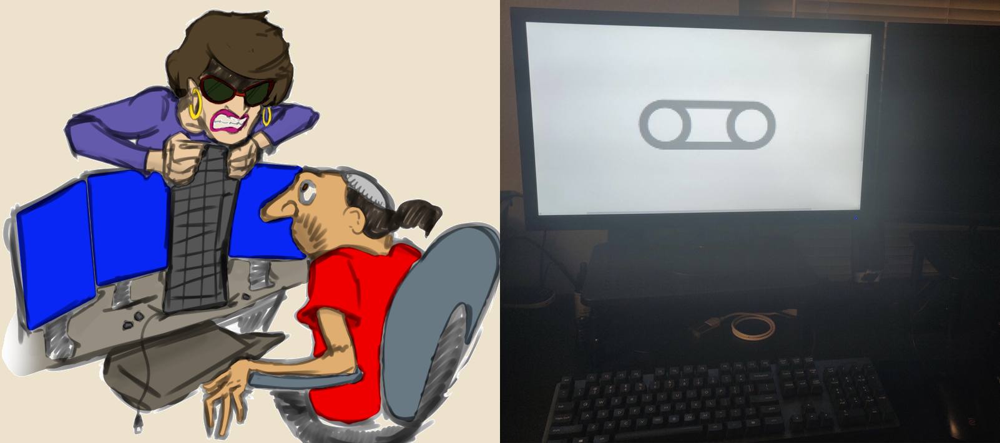
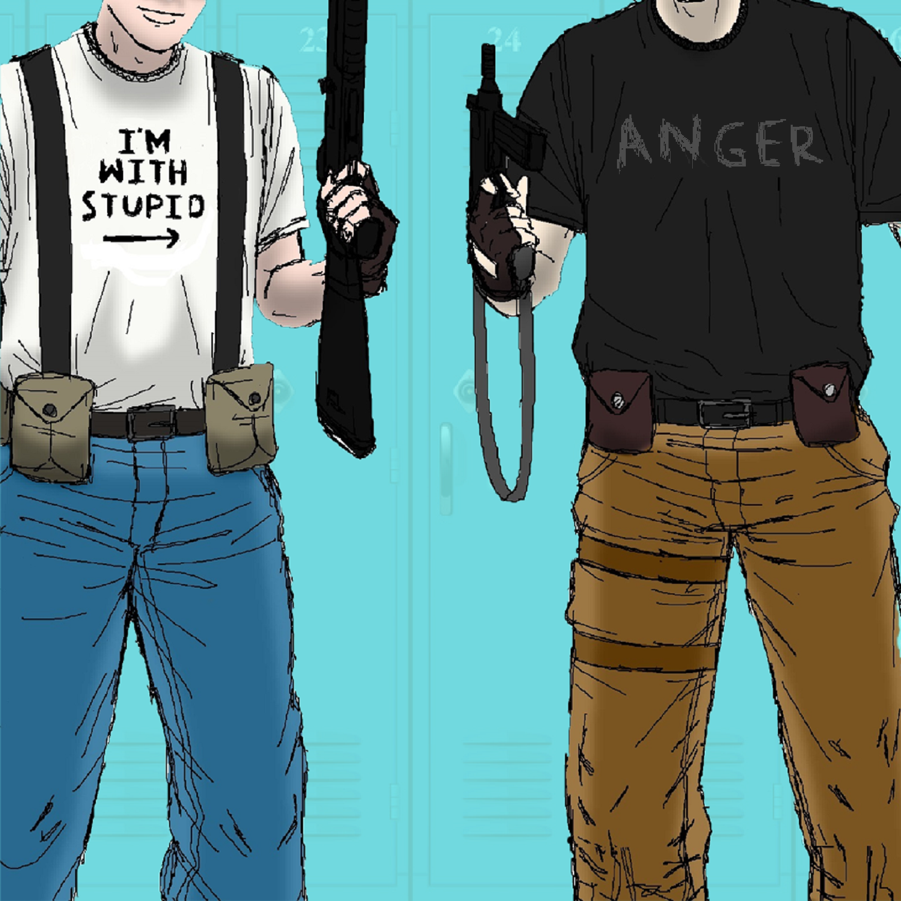
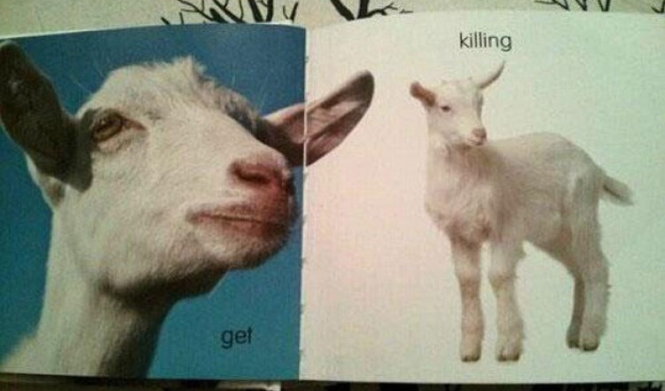

My creative process when it comes to any sort of written work often looks like a lot of impromptu brainstorming and note-taking just whenever inspiration happens to strike me - that I only ever return to quite some time after the fact to work into something even remotely organised. Shortly after I did my first draft for Autumnals and then put that whole project on the backburner indefinitely, I started rummaging through my piles and piles of ideas-notes looking for anything else that seemed to have potential. Evidently, by then I had accumulated a decently sized collection of story concepts and premises, and I decided to start seeing if I could workshop them into anything.
What I eventually settled on attempting around this time was a series of surreal short-story zines that would try to integrate comic book elements. I saw trying something like that as both a fun experiment in its own right with a different style than I was used to, and as potential practice for if I wanted to return to Autumnals and take it down that sort of route. My working title for this little zine series was The Uncommonplace Books - playing off an antiquated term for a journal, and my concepts' lean towards surreal and uncanny elements.
I ended up cobbling together a few partial stories this way, and mainly just passed them around among friends and the local indie literary crowd for feedback. Some ended up more complete than others - a couple were basically passable as final, others were more like disjointed liner notes. All the same, I decided I wanted to hang onto all these concepts in case I wanted to develop them further in the future - which I'm certain I will eventually. And, I believe there's also often a lot of potential value in discussing one's yet-to-be-fully-realised ideas. So, much like I also did with Autumnals elsewhere here on my website, I also want to talk about what my Uncommonplace Books ideas are, what inspired them, and how I've always imagined adapting them at some point - just to offer some insight into my creative process and my usual line of thinking about these sorts of things.
I feel I can illustrate the very meandering way I tend to develop creative projects by way of walking the reader through how I approached the first Uncommonplace Books concept I plotted out in my notes. For reference: a month or two prior to all this, I had been rereading all my favourite H. P. Lovecraft stories. Specifically, with a particular interest in closely noting how Lovecraft will, quite often very subtly, use a protagonist's limited - or perhaps, dubiously-reliable - point-of-view to drive his plots' intrigue and give the reader the impression there might be more to the world of his stories than just what we read explicitly. Given how so much of Lovecraft's literary output could be described as being principally about inscrutable and unfathomable things, it's a great example of how the artistic themes of an author's work can dovetail so well with the actual textual construction of their writing.
In particular, I think the stand-out Lovecraft story for demonstrating this sort of thing is his The Whisperer in Darkness. For instance, early in the plot, the protagonist is convinced he's being conspired against by unseen agents and otherworldly beings whose bodies don't persist if they're killed, and which just so happen to not show up on film either. And the story gets a lot of mileage out of playing with the idea that the protagonist may or may not be correct in his assertions when he can't find anyone to take him seriously about all this and he can't offer up any tangible proof of his claims.
I wanted to try writing a story that sticks with that sort of premise throughout - but initially, I didn't have any idea what the setting should look like, or what the central conflict should be. I don't think you can reliably force yourself to come up with ideas, but, it just so happened that shortly thereafter I was talking with friends about various layouts of computer and typewriter keyboards. We ended up joking that the qwerty model may be efficient, but it sure is ugly. And one of us facetiously said that because the individual letters on the keyboard are unevenly sorted into differently-sized rows, it almost looks like the bottom, shortest, row is now missing a letter that it ought to have. "...and that's why Big Keyboard made the shift key extra-long to cover it up, they don't want people to find out about the letter that used to be there"
That jokey premise quickly got me thinking. The idea of someone being absolutely convinced that there used to be an extra letter in the alphabet, that some powerful force is now trying to cover up the existence of, is a fun, absurdist, take on conspiracies and the idea of lost esoteric knowledge. I also figured that, depending on how you wrote that sort of story, it could also come across very effectively moving. After all, I could very easily imagine someone having a real serious mental episode expressing the same sort of belief - and seeing someone have a breakdown, even over something so 'absurd', could still be very harrowing. The potential in exploring that sort of dynamic, and the novel premise I now had, meant that I was really interested in doing something with this concept for a very long time.
I eventually landed on the story being: a white-collar office worker exasperatedly trying to convince their coworkers that all their company-issue keyboards must have inexplicably been swapped-out overnight for new models that are missing a letter. And the rest of the office getting all confused and concerned because they all don't acknowledge that anything's amiss, and perhaps it's left ambiguous as to who's in the right.
I was so invested in the idea that I spent several weeks workshopping ways to turn that premise into some sort of coherent plot. I considered trying to put together an illustrated chapbook, or doing it as a comic, - but I ultimately concluded I would feel the most confidant doing this particular concept as a fairly straightforward written piece. I ironed out the finer details as I wrote, and pretty quickly, ended up with a roughly three-thousand word draft that served as my first Uncommonplace Books prototype. I ended up passing it around and soliciting feedback from friends and associates - who I'm proud to say did largely all apparently enjoy it too. Of everything I did end up writing around this time, I think it's still my personal favourite too. I have since then actually gone back and polished this particular piece up a tiny bit, and made it readable in-full here on my website - that draft ended up becoming my short story 🜽.
I'm very happy with how 🜽 ended up. I think it might be one of the best things I've ever written; at the very least, it's the concept I've been most proud of coming up with. I'm not actively thinking about adapting it into a comic or short-film format currently, but that could be a project for the future at some point. I have idly thought about how such an adaption could work from time to time. And I do still have a bunch of concept visuals for that sort of adaptation saved away somewhere; brainstorming up a sort of experimental 'anything goes' multimedia moodboard of ways I can iterate on a concept is almost always a part of my personal creative process, and I also hang onto that sort of material in case I want to refer back to it later. But, as it is, I'm also definitely content to let the straightforward text-only version of 🜽 speak for itself for the time being.

A couple of concept images to have come out of briefly workshopping 🜽.
After I set aside the more-or-less completed 🜽, I was still really keen on exploring the possibility of doing some sort of Lovecraft-inspired surreal thriller comic - so that's the direction I tried taking a few more of my Uncommonplace Books premises.
I had another story concept I really liked and wanted to do something with that I tentatively titled Martian Mission. I imagined this as being a sort of uncanny bizarre comedy, with just enough of a vaguely eerie throughline to elicit a sense of foreboding intrigue. The elevator pitch of the narrative arc was: in the unspecifically near-ish future, Humanity is about to its land its first-ever crewed expedition to Mars. We see a small crew of astronauts being dropped down onto the surface of the planet in some sort of prefabricated habitation pod or module system. Then, literally as the red dust is still settling, the crew hears distinct knocking coming from outside the outermost airlock door. Mission leader looks out through the airlock window, and it's an inexplicable pair of chipper Mormon missionaries. Wearing nothing more protective than their typical suits and ties - their entire presence and presentation is completely unexplainable - but nevertheless, they're just matter of factly there and politely and nonchalantly asking to come in as if they're out knocking doors on any suburban Earth street.
I like this setup a lot. And I spent a lot of time simply just choreographing specific individual comic panels and full-page illustrations I knew I wanted to capture - like a shot of the missionaries eagerly smiling through the pod's airlock porthole while the entire background behind them is just the inhospitable blasted red Martian landscape. Although, I never completely decided how I wanted the story to play out. I figured I could either ultimately play the whole thing completely straight - in which case I could write it as a really compelling abstract sci-fi horror. There, the unsettling implication is that Mormon evangelists have the ability to just appear at any front door that exists anywhere, regardless of how impossibly distant it is. And there's also an implied sinisterness to the fact that these missionaries look and communicate just like normal people, but evidently also don't understand that two people nonchalantly appearing on the surface of Mars, mere moments after the first crewed mission gets there - and acting politely and wearing regular clothes no less - is actually profoundly unsettling in its inherent wrongness.
Alternatively, I figured there could also be some potential in taking the story in an entirely different direction too - you could lead more on the comedic angle to take the end off the implied horror, or subvert the sci-fi setting entirely. I had no ideas set in stone. But, for instance, you could very easily do a lot of really interesting art and illustrations of the missionaries trying to introduce themselves to the astronauts and play with the same narrative intrigue of having these Mormons insist they're just regular people - much to the crew's increasing unease. Perhaps the tension boils over into physical conflict or some other serious confrontation. However, ultimately, you end the whole story by making the big reveal be that these astronauts are actually participating in a training scenario on Earth that they merely believe to be real - and their habitation module has actually been airdropped in the red rocky desert of remote Utah. Where, it's it's much more plausible that two enthusiastic young Mormons might very understandably want to investigate the mysterious thing that just fell out of the sky, and perhaps even try to find out if anyone inside needs help.

The inhospitable and uncharted surface of Mars.... or possibly Capitol Reef National Park, Utah.
Martian Mission wasn't the only premise I specifically wanted to pursue for its potential for adapting as a more visual project. But whereas the (pseudo?)-Martian setting interested me because I was looking for a reason to set up some really intriguing scenes - like the aforementioned illustration of the missionaries standing nonplussed outside the Mars landing-pod's windows - I also had another idea for a setting and a premise I wanted to expand on as a comic, but this time for a different reason. I wanted to experiment with drawing stylised visual designs that specifically fit a setting they're designed for, rather than just making a comic out of a story that could just as readily be done in a completely different medium.
That's why I did another one of these small prototype zines, this time under the working title Housewarmingpartygift. The basic narrative premise here was: it's the 1950s or '60s, and the story is centered on an former mid-level Nazi or Nazi-collaborating military officer, who essentially escaped any sort of justice at the end of the war, and who is now living incognito somewhere in the recently rebuilt urban social housing of Eastern Europe. As the story begins, this Nazi officer is finally recognised for who and what he is by another resident to the same housing development - a former Warsaw Ghetto Uprising-type resistance partisan-type, perhaps with whom he's got some personal history.
Understandably, the partisan hates this guy immediately - to the point where he'd like to kill him personally - for what he did during the war. So, seeking a poetic vengeance - and capitalising on the fact the Nazi evidently doesn't recognise him back - the partisan duplicitously welcomes the erstwhile fascist to the housing project with a housewarming party. Where he makes a point to give the Nazi the gift of a pricey electric radiator-style heater - a new and highly sought-after commodity at the time - citing a local custom to welcome newcomers lavishly. The catch is; the former resistance fighter has recalled his old talent for lethal mechanical sabotage and other partisan tactics to insert within this radiator a sizable quantity of liquid prussic acid compound - which will aerosolise and fill the room with deadly hydrogen cyanide gas the first time the heater's new owner turns it on.
That summary covers the first half of the plot, but I essentially wanted to use that setup to explore a distinct theme and visual style most inspired by a lot of Art Spiegelman's Maus. Personally, I wanted to use this story as a vehicle for exploring the consequences of past actions, past inaction, haste, hesitation, and reaction - all in a narrative that's largely set in one sparse location and just features two archetypal characters. I've already rough-drafted out a lot of this one's individual pages and panels - put together a few potential title and cover design concepts too - and I'm very happy with it all. Currently I'm just waiting until I eventually feel completely ready to draw the whole thing properly before I showcase this one publicly.
While I'm on the subject and writing about my general creative process, I also just have to illustrate the sort of thinking that went into that title, Housewarmingpartygift. Firstly, it's playing off the German language's proclivity for compound nouns. But I recall I was also trying to fit as many puns as possible into it, basically. A housewarming is a party where you introduce someone to the neighborhood, and traditionally often give them gifts to help furnish their new home. 'The Party' is how many underground resistance-types in occupied Europe would euphemistically refer to the Nazi regime their governments were made to collaborate with. The Nazi is here being given a housewarming gift that ostensibly is actually for heating one's home. And also, "gift" is German for "poison". I have a real love for titles that do that sort of thing.
One potential stylised Housewarmingpartygift cover concept or motif design that came out of its 'moodboard brainstorming' phase.
I must have had morose graphic novels on the brain around this point, because concurrently with Housewarmingpartygift, I drafted and outlined another future comic premise I'll finish some day. I'll give away less of the plot this time, but essentially: Working title is Inactive Shooter. Set in a nondescript 1990s American highschool, one highly intelligent - but cynical and antisocial - upperclassman essentially plans to groom one of his remedial-level grungy-goth dropkick classmates into purportedly participating in a two-perpetrator school shooting reminiscent of the real-world Columbine High School massacre. However, this upperclassman's suggesting that he and his new friend plan and carry out a school shooting together is established to the reader from the outset of the story to belie an ulterior motive. He wants to be able to step-in and appear to heroically stop the massacre as it begins, in a bid for admiration that indicates a sociopathic disregard for his schoolmates' lives.
In any sort of story with a significant handcrafted visual component - like a comic, or for that matter, something like an animation perhaps a video game - I really appreciate the visual style of the work itself tying into the setting. I hope to hew to that idea myself. So, for instance, a lot of the concept layout I did workshopping Housewarmingpartygift earlier I drew intending to ape the constructivist pop-art style of midcentury Eastern European animation in the finished product. Since my Inactive Shooter concept is set in Nineties America, there was briefly an impulse to try illustrating it with a Nineties American comic artstyle. However, for reasons I might not be able to articulate clearly or identify even to myself, I just simply find something about the way most Western comics and animated characters were being drawn around that time to be deeply, ineffably, offputting.
Looking for an alternative then, I briefly considered trying to give Inactive Shooter a crunchy pixel-art look - perhaps trying to capture something reminiscent of Nineties computer games like DOOM. I think that wouldn't be an altogether bad idea. Especially not if one were to try tying that design choice into the period fear of shooter-games like DOOM being a contributing factor in incidents of school and workplace violence. However, I don't see it as being a design choice I'm particularly likely to pursue when I do eventually get around to adapting this concept. Conceptually, it's certainly an interesting idea. But putting together a considerable amount of good pixel-art is not a skillset I presently have. And furthermore, I simply don't know how viable trying to tell even a fairly short narrative like this, while remaining true to the artstyle of a 320p first-person shooter, can practically be.
Needing some sort of alternative illustration plan then, but still liking the idea of invoking an aesthetic that linked the art to the setting in some way, I ended up doing all my conceptual spec-drawing for this one in a sort of compromise. I planned out a set of first draft designs that go for a sort of Nineties
I'm really looking forward to developing Inactive Shooter further in due time, primarily because I'm so happy with how all my concept sketches for this one worked out. In particular, there's one panel I did for it that remains one of my favourite things I've ever drawn outright. To put this design into context: I never completely settled on how I wanted to tie up the resolution of the plot; but one of the ideas I was toying with was to subvert the premise of the cynical sociopath setting up the remedial student. Instead, I'd resolve the story by revealing that the supposed dumb kid actually just went straight to local law enforcement the first chance he got to report that another student was trying to coerce him into doing a shooting. And in reality, all of his appearing to play along with the plan to do a massacre beyond that point was a sting operation being done on the smart one.
I really like that idea for an ending, because it means the story doesn't extol or glorify what would in real life be an absolutely evil thing to plan. So it is likely very close to what I'd go with if I had to definitively commit to a resolution anytime soon. But also, the fantastic visual design piece it prompted me to do was a particular full-page panel illustration where you have the two main characters, both framed from the neck down, wearing tactical clothing, and holding guns. All in a way that is very consciously reminiscent of, or parodying, the real-life Columbine massacre perpetrators' outfits; where one of the character's shirts very heavy-handedly just says "ANGER", and the other's is the classic "I'm With Stupid →" gag. But the neck-down framing of the pair in that panel means there's a potential hidden ambiguity of who's who there, and that could be some nice subtle foreshadowing of that subversive ending too.

A taste of Inactive Shooter's artstyle and tone.
I really enjoyed those personal experiments in plotting out a comic format and thinking about stylistic choices and how to frame panels in a heavily visual medium. Inactive Shooter did end up being the last
I had one story concept that I envisioned as aping Franz Kafka, but in a modern blue-collar worker setting. Not dissimilarity to how 🜽 was an effort to channel Lovecraft's tone and atmosphere in a white-office office setting. People who aren't particularly familiar with Kafka might just think of him as a guy who wrote about a big bedbound bug, but I think that overlooks his most recurrent motif: getting endlessly and arbitrarily pushed around in life by the actions of other people and systems for seemingly no gain or reason. Wanting to explore that idea, I had a rough draft of a story I was working on, called Cashiered. If you happen to not know, to be "cashiered" is essentially an old-timey military term for being dishonorably dismissed from service - which dates back to the era when officers used to literally buy their ranks and titles.
In my draft for Cashiered, a young suburban leftie liberal woman is essentially drummed out of her local anti-corporate activist scene for specious reasons - perhaps for being too opinionated or challenging the passivity of the rest of the group. So she subsequently becomes a little bit disillusioned with it all, and she ends up taking a job at a newly opened Wal-Mart-style big chain store. But it's not long before all her former friends show up protesting the store's opening, and agitating all the employees trying to get them to unionise and strike. What I've tried to play with here is the girl's internal conflict over doing what she believes to be right morally and how she makes those decisions. Coupled with how people around her are expecting her to act for their own benefit, and how she's alienated by the flippant actions and decisions of those around her.
Another piece I drafted around this same time could be thought of as an attempt to mimic Kafka's other major motif: an internal sense of loss of identity and agency in a bizarre way. I hadn't actually been planning on trying to write a second kafkaesque piece at the time, but I stumbled onto the right inspiration for this one by complete happenstance. I just so happened to have been reading up on 1970s true crime around this point. In particular, about a serial killer named David Berkowitz. Who came to national prominence attention not only because he killed a bunch of people, left letters taunting the cops, and got away with it for quite a while - but because, when he finally did get caught and went to trial - he plead insanity. And famously, said that the whole thing was his neighbour's dog's idea. Supposedly, the dog had psychically told him to do all those murders.
I read about this, by complete coincidence, around the same time I just so happened to see a post online humorously showing off a page from an illustrated Swedish childrens' vocabulary book about farmyard animals. The reason for showing this page off specifically, is because apparently the Swedish language words for 'goat' and 'kid' are spelled "get" and "killing" respectively. So I jokingly thought, "what if an insane, Berkowitz-style, person who only reads English saw that, and thought it was a satanic image giving them an explicit instruction".

The "get killing" post in question.
It's unabashedly a patently absurd set-up for a plot. But, I've long thought there could be some dark comedy material in the idea, so I outlined a basic story arc for it under the simple working title Get Killing. I thought the most interesting - and kafkaesque - way to play with the premise would be to have your focal character be a newly-arrived migrant or similar in Sweden. Perhaps they could be a refugee fleeing a warzone - someone believably traumatised already, and potentially predisposed towards disordered or frantic patterns of thought through no fault of their own. Then you explore the concept of them being stymied from integrating into society properly because the only language resources they can get are childrens' books, or something along those lines. I maintain there's potential there, but I haven't explored developing it into a finished concept yet.
Similarly, the rest of the ideas I was working on around this time under the Uncommonplace Books banner remained just little conceptual pieces I only showed around to a few friends for rudimentary feedback. They were really often little more than loosely collated notes than even partially-written stories like those described above. What I had been pondering with these minimally-developed pieces for a while was primarily seeing if I could come up with a good short story, that while entirely text-based, presented that text in a unique and atypical way. My process was essentially just to think of a different written medium, come up with a plot related specifically to that medium, usually give it some sort of pun-based working title just for the hell of it, and spend a lazy afternoon or two seeing if I could do anything entertaining with it from there.
For instance, one page of my notebook was dedicated to Liberal Bromides. Premise was: small group of business school frat-guys trying to acquire land for a pineapple plantation, but they're facing resistance from the ostensibly progressive people who own land they want, so they need to try and spin themselves as being socially conscious. But I wanted to see if I could develop a whole satirical piece out of that, told entirely through a chain of diegetic inter-office memos and press releases.
Anchor Unchained was something similar that I started and restarted multiple times and never got completely satisfied with. Originally, my concept was: it's a grim satire, framed as a series of newspaper columns about incidents of gun violence, written from the perspective of an American journalist, who gradually becomes jaded about the issue. Perhaps after his reporting is moved from the front page to the minor op-ed section, because shootings are occurring so frequently his reporting isn't particularly novel anymore.
I couldn't make that work. So I considered: what if the journalist instead tries to become the biggest story of the year by committing a massacre to upstage all those he's been forced to report on. But I didn't like that either. Next I tried something about an American TV newsman who eerily predicts the next day's gun violence in advance on some sort of weather forecast-like broadcast. Ultimately, I scrapped that too. And the last version of this story I tried before I moved on to something else entirely went back to the word "anchor", and I started playing with the idea of a British maritime radio broadcaster who starts doing major industrial sabotage to keep the BBC's Shipping Forecast relevant.
I abandoned that, because not all ideas need to be stayed with forever. Rather, I started workshopping Sage instead. My premise here involved a four-thousand-year-old Celtic druid, who's remained alive right up until the present day on account of his knowledge of how to brew immortality-bestowing herbal elixirs. In an effort to play around with a different textual medium in a satirical manner - and perhaps in a more lighthearted way too - my story conceit here was that this ancient druid is trying his best to share his knowledge of these immortality elixirs. Seeking an audience, he tries to get the word out online - which is how I wanted to set up that the whole story is essentially told as a series of social media and messageboard posts. I think there could be a levity to it all too, if you have the narrative complication be that this ancient wise-man's recipe for genuine immortality basically gets drowned out and ignored amidst so many other purported miracle health claims going around online.
That's essentially everything literary I substantially worked on around this time. On reflection, when you're trying to come up with creative ideas, I think it's a good idea to try conceptualising of the creative development process as a project itself. At least that's a method I've found definitely works for me - even if I think I'm only ever going to be showing these things off to a few people for feedback anytime soon. That's why I came up with that Uncommonplace Books label, and thought about this whole effort as if I was pitching a series of standalone story zines to help me define and ground my thinking.
The other two things I'd recommend to anyone interested in learning how to more easily come up with creative ideas of their own, especially literary ones, is firstly: simply read good classic literature more. Read widely across different genres and cultures and time periods. If you find an author whose work you like, seek out the rest of their output and take it all in. Actively think about what major themes and motifs do any particular author's works most strongly convey, articulate for yourself why that is, and think about how you could imagine adapting those themes to a new setting.
The other bit of advice I hew to is: be observant and cognisant of the world around you; think about every little thing you see and hear and interact with, try and associate your observations with other things you know about or have experienced, and think about what narrative potential is there. Keep a notebook; write down your observations. You never now when or where or why inspiration will strike. Come back to develop those ideas whenever you can find the time.
Not too long ago, I saw a disposable plastic fork with a number embossed on the back. I figure it must have been a production serial number, or possibly related to recycling standards. I began absentmindedly pondering what sort of story you could tell about numbers on a fork. One of the places my mind ended up wandering, was recalling the practice of a lot of online messageboards and imageboards where every individual post and comment will be given a unique sequential number. With potentially thousands of posts occurring across dozens of different threads every minute on sites like these, predicting what number any given new comment will get is functionally impossible - but there's a longstanding culture on many imageboards of essentially making a lighthearted game of comparing numbers with other users. Anonymous commenters will jokingly boast about getting a number that ends with two or more of the same digit or of getting a particular ordered sequence.
I could imagine that same dynamic playing out with the forks. Consider it like an Andy Kaufman-esque dry comedy skit; bunch of blasé schoolchildren sitting around a cafeteria table, comparing cutlery.
"Hey man, what number you got?"
"19."
"Ha! I win, I got 55!"
"Aww, man...".
This stuff practically writes itself. Again, recently I went past a homegoods store advertising glassware in their window. Saw a glass tankard with 'World's Greatest Dad' laser-etched into it; thought it was an intriguing concept. I immediately stopped to describe it in my notebook. Shortly thereafter added "pathos angle: conflicted young alcoholic has been secretly drinking to excess every day and is trying to go cold turkey - but it's almost Father's Day, and his dad's invited him over for a beer". It's little things like that you note down and build on top of later to come up with story concepts people can connect to.
There's inspiration everywhere for those with eyes to see.
That's really the best - and most actionable - creative advice I could possibly give to anyone eager to get into writing, who's struggling to find inspiration. Just find some ideas where you can, and throw together some rough conceptual outlines. You don't necessarily need to share your first drafts with the whole world. You might just share them with friends or family, see what they think. Alternatively, just leave your projects alone for a while; come back later with fresh eyes and see if there's anything you'd change. And, of course, I think the real final word on the matter is: there's absolutely nothing wrong with writing out countless 'bad' stories - especially not if you see them as stepping stones towards eventually producing something you are totally happy with. Or, better still, if you simply enjoy creative writing for its own sake. If you're having fun making art, you're doing it the right way.
last major update: April 2026